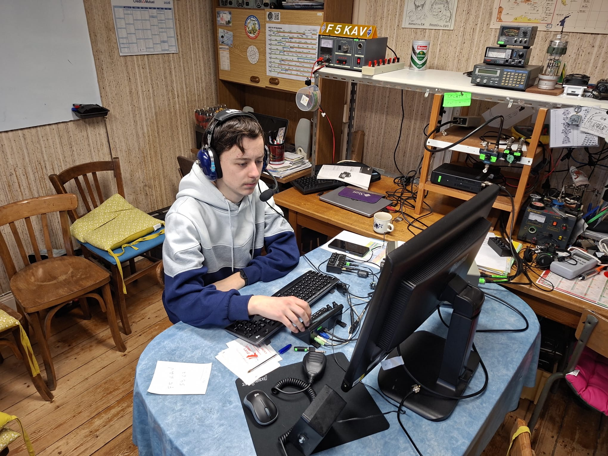
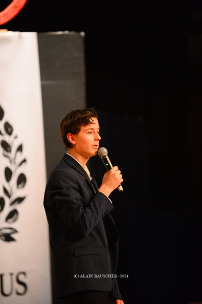
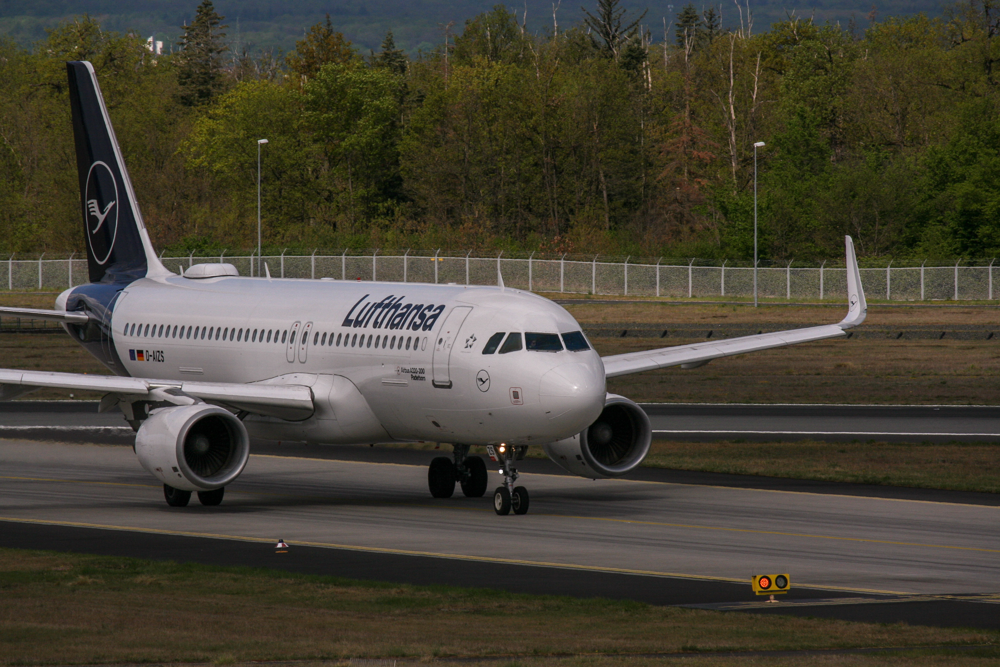

Au-delà de la technique
Mes centres d'intérêt reflètent mon goût pour la précision, la communication et l'exploration.

Radioamateur (F4LMS)
Opérateur certifié HAREC — Expertise en ondes et électronique.

Chant Choral
Esprit d'équipe, écoute et harmonie au sein d'un ensemble.

Trompette
Pratique instrumentale exigeante : rigueur et persévérance.

Aviation & Spotting
Passion pour l'aéronautique et la technique (Skymaphub).